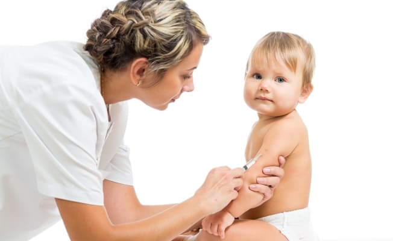
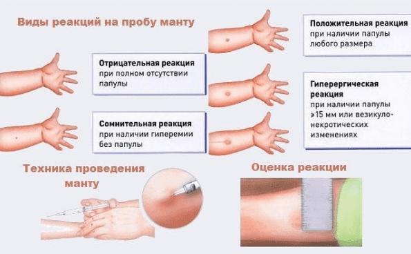
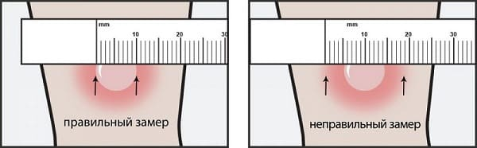
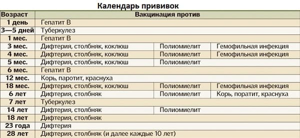

Как человек, достаточно много времени проработавший в инфекционной больнице, с уверенностью заявляю: в отношении всех болезней, против которых прививки делаются, вероятность заболевания остается весьма реальной. Дети этими болезнями болеют, а исходы бывают, мягко говоря, разные.
Поэтому для нормальных, здравомыслящих и благоразумных родителей нет и не может быть никакой дискуссии по поводу того, надо прививки делать или не надо.
ДЕЛАТЬ ОБЯЗАТЕЛЬНО!

Совершенно другой вопрос состоит в том, что ответные реакции на прививки самым существенным образом зависят от состояния организма ребенка. И если вы очень боитесь, то логика не в том, чтобы прививки не делать. Логика – в целенаправленной подготовке организма: нормальном образе жизни, естественном вскармливании, закаливании, устранении контактов с источниками аллергии и т. п.
Прививки необходимо проводить в назначенные педиатром сроки, и чем более вы точны, тем выше профилактическая эффективность. Это обязательно следует учитывать при планировании, например, летнего отпуска; неплохо бы и самим поинтересоваться, когда и какую прививку необходимо делать.
Каждая страна мира имеет свой, утвержденный соответствующим государственным органом календарь профилактических прививок. Этот календарь учитывает возраст ребенка, интервал между прививками и перечень конкретных болезней, для предупреждения которых прививки, собственно говоря, и делают.
В чем же состоит суть профилактических прививок?
В организм вводится медицинский препарат – вакцина. В ответ на введение вакцины организм вырабатывает особые клетки – специфические антитела, которые и защищают человека от соответствующей болезни.
Каждая из вакцин имеет свои строго определенные показания, противопоказания и сроки применения, свою схему и свои пути введения (через рот, внутримышечно, подкожно, внутрикожно).
На каждую вакцину организм реагирует по-разному. В некоторых случаях одной прививки вполне достаточно для выработки длительного иммунитета. В других – необходимы многократные введения. Отсюда возникли два медицинских слова – вакцинация и ревакцинация. Суть вакцинации – добиться выработки специфических антител в количестве, достаточном для профилактики конкретной болезни. Но этот стартовый (защитный) уровень антител постепенно снижается, и необходимы повторные введения для поддержания их (антител) нужного количества. Вот эти повторные введения вакцины и есть ревакцинация.
Упомянутое нами выражение «реагирует по-разному» относится не только к качеству и срокам формирования иммунитета, но и непосредственно к ответным реакциям организма ребенка. К реакциям, которые и врачи, и родители могут непосредственно наблюдать (нарушение общего состояния, повышение температуры тела и т. д.). Выраженность и вероятность этих реакций определяются тремя факторами.
Первый – о нем мы уже говорили – состояние здоровья конкретного прививаемого дитяти.
Второй – качество и свойства конкретной вакцины. Все вакцины, разрешенные к применению (сертифицированные) Всемирной организацией здравоохранения (а в нашей стране применяются только такие вакцины), обладают высокой профилактической эффективностью, и нет среди них ни одной заведомо плохой и некачественной. Тем не менее вакцины разных производителей могут вмещать разные дозы антигенов, отличаться по степени очистки, по виду используемых консервирующих субстанций. Кроме этого, вакцины, даже предназначенные для профилактики одной и той же болезни, могут отличаться одна от другой самым принципиальным образом – например, могут представлять собой препарат, созданный на основе живого, но ослабленного микроба, или препарат на основе микроба убитого (или даже части этого убитого микроба). Понятно, что если микроб хоть и ослабленный, но живой, всегда есть вероятность развития болезни (той самой болезни, от которой прививку делали), а с убитым микробом такой вероятности нет.
Третий фактор – действия медицинских работников. Вакцинация – это не рядовой стандартный процесс, по принципу «в три месяца всех уколоть», а индивидуальные, совершенно конкретные и очень ответственные действия, которые конкретный врач осуществляет в отношении конкретного дитя. И действия эти вовсе не так просты, как может показаться на первый взгляд. Необходимо оценить состояние здоровья ребенка, подобрать вакцинный препарат, дать родственникам малыша четкие и доступные рекомендации касательно того, как подготовить дитя к прививке и как обращаться с ним после нее (питание, питье, воздух, гуляние, купание, лекарства). А еще очень важно скрупулезно соблюсти множество прививочных тонкостей: как вакцину правильно хранить, как перед использованием нагреть, в какое место сделать укол и т. п.
Теперь несколько слов про конкретные прививки от конкретных болезней.
Самая первая прививка – это прививка против туберкулеза. Она, как правило, делается непосредственно в роддоме в первые дни после рождения, однократно. В дальнейшем, теоретически, ревакцинация осуществляется в 7 и в 14 лет. Почему теоретически? Да потому, что вопрос о том, делать или не делать ревакцинацию против туберкулеза, во многом зависит от пробы Манту. Пробу, или реакцию, Манту детям ставят довольно часто, но подавляющее большинство родителей понятия не имеют, что это и для чего это.
Дело в том, что практически каждый человек рано или поздно инфицируется бактерией туберкулеза, т. е. микроб попадает в человеческий организм. Но сам факт инфицирования вовсе не свидетельствует о том, что человек заболел туберкулезом. Допустим, микроб попал, а организм, благодаря все той же прививке, имеет защитное количество антител – вот болезнь и не развивается, хотя туберкулезная бактерия присутствует. Реакция Манту – это не прививка, это проба на инфицирование туберкулезом. Т. е. если в организме туберкулезных бактерий нет – проба отрицательная, а после инфицирования она становится положительной.

Как же все это осуществляется на практике? Ребенку ежегодно делают реакцию Манту, и она, как правило, положительная (ведь ребенок получил туберкулезную палочку при вакцинации), т. е. после пробы возникает небольшое покраснение кожи. Иногда проба отрицательная – если вакцинация не проводилась или оказалась не эффективной. Но вот в один не очень прекрасный момент из отрицательной проба становится положительной или из положительной – резко положительной. Медики называют это виражом туберкулиновой пробы, и этот самый вираж рано или поздно имеет место практически у всех людей, но у одного – в 3 года, а у другого – в 6 лет или в 12. И вот тут-то возникает весьма ответственная ситуация. Необходимо получить ответ на очень принципиальный вопрос: человек инфицировался, но не заболел потому, что имел (имеет) иммунитет, или заражение привело к возникновению заболевания – защитных антител не хватило.

Отвечают на этот вопрос врачи, специалисты по туберкулезу (фтизиатры). Для этого ребенка осматривают, берут определенные анализы, проводят рентгенографию органов грудной клетки. В зависимости от результатов врач делает соответствующее заключение. Выявлен туберкулез – лечим туберкулез, сомнительные результаты – курс профилактического лечения особыми противотуберкулезными антибиотиками, все в порядке – все в порядке, но ревакцинацию теперь делать не надо: противотуберкулезный иммунитет будет поддерживаться уже не вакциной, а непосредственно попавшим в организм микробом. А задача медиков – не упускать такого ребенка из поля зрения, поставить на учет и регулярно осматривать, дабы вовремя выявить ситуацию, когда организм не справится и таки придется лечить.
В роддоме может быть начата и вакцинация от гепатита В с последующими ревакцинациями в один и шесть месяцев.
В возрасте около трех месяцев начинаются прививки непосредственно в поликлинике. За три введения с интервалом в 1–1,5 месяца осуществляют вакцинацию сразу от нескольких болезней – от полиомиелита, коклюша, дифтерии, столбняка, гемофильной инфекции. На втором году жизни проводится ревакцинация от всех этих заболеваний.
В годовалом возрасте делаются прививки от кори, краснухи и паротита (свинки).

После любой прививки (любой!) может иметь место реакция организма – повышение температуры тела, отказ от еды, вялость. Это нормально: организм вырабатывает иммунитет (защиту) к конкретной болезни. Одни вакцины переносятся очень легко и почти никогда не дают серьезных реакций, типичный пример – вакцина против полиомиелита. Введение других препаратов, напротив, часто сопровождается выраженным повышением температуры и существенным нарушением общего состояния ребенка, опять-таки типичный пример – коклюшный компонент вакцины АКДС.
Для родителей очень важно осознавать принципиальную разницу между реакцией на прививку и осложнением после прививки.
Реакции на вакцинацию, в той или иной степени выраженности, просто обязаны быть, и это, как мы уже отметили, абсолютно нормально.
Что же такое осложнения? Вот это как раз то, чего быть не должно, то, что бывает крайне редко. Не должно быть ни судорог, ни потери сознания, ни температуры выше 40 °C. Не должен ребенок покрываться с ног до головы сыпью, а в том месте, куда укололи, не должно быть никаких нагноений.
Осложнения после прививок – это всегда серьезно. Каждый такой случай подробно анализируется, целая врачебная комиссия решает: почему так получилось и что же делать дальше? Прививать или нет, если да, то каким препаратом и от каких болезней.
Е.О.Комаровский. "Здоровье ребенка"